- The battle of the AUX - Het is altijd een grote discussie. Wie mag op de muziek? Of nog beter: Wie krijgt de aux kabel? Start
Wie zou jij de aux geven? 1- Welk nummer zou je luisteren op je beste dag van de week? 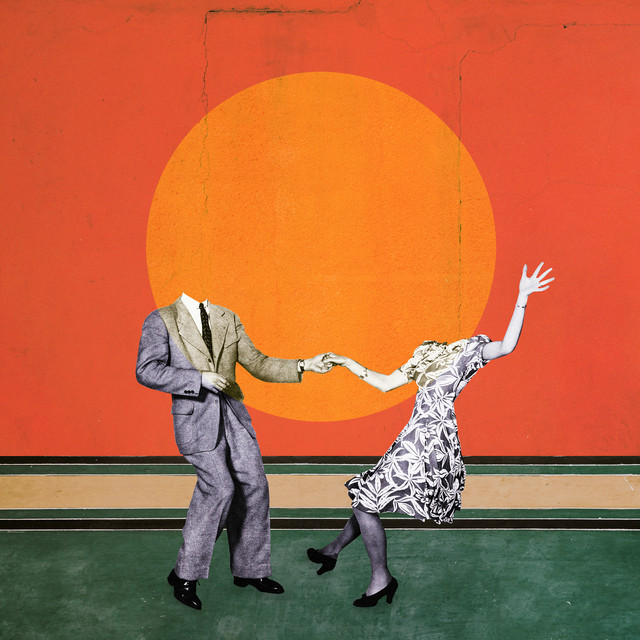 Half.alive - Still fee 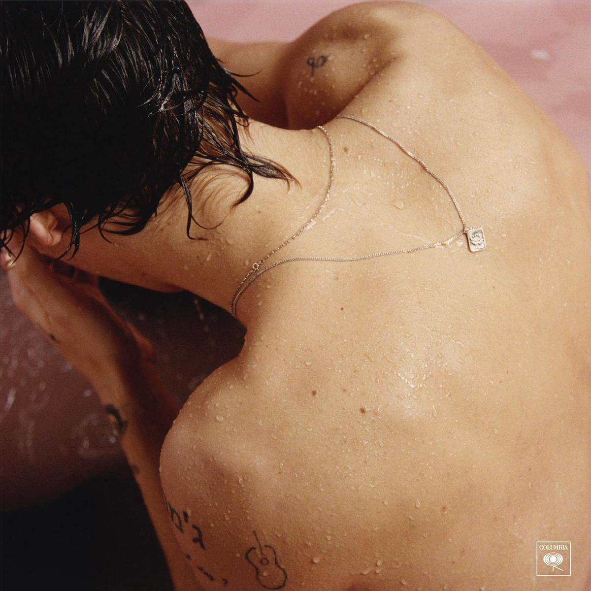 Harry Styles - Kiwi 2- Welk nummer gepresenteerd jou als je boos bent? 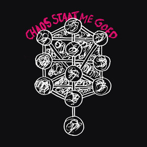 YoungRubbi - Gestrekt been Turnstile - Blackout 3- Welk nummer zet je op als main character die door de stad loopt? 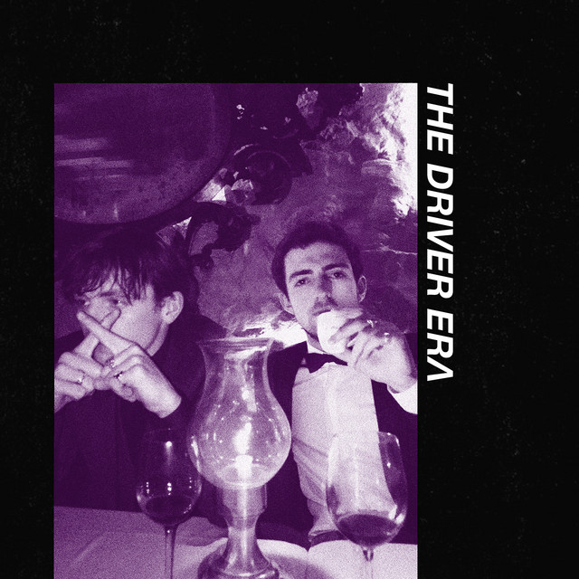 The Driver Era - Preach 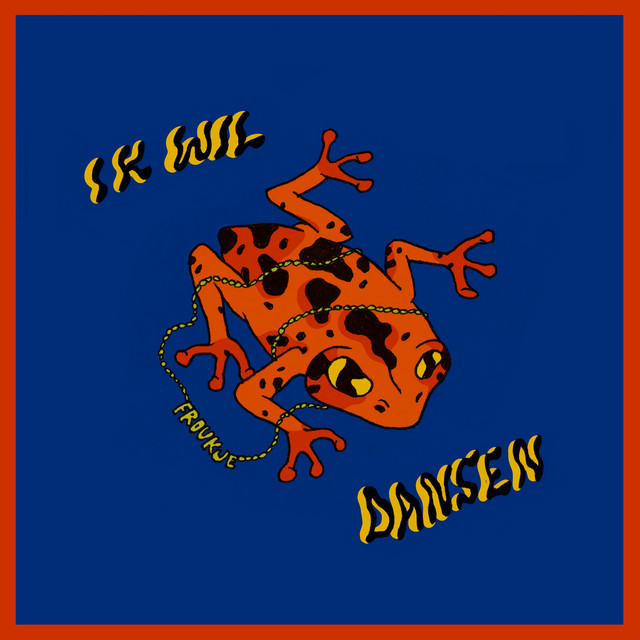 Froukje - Ik wil dansen 4- Welk nummer zet je eerder op als je even echt wilt schreeuwen? 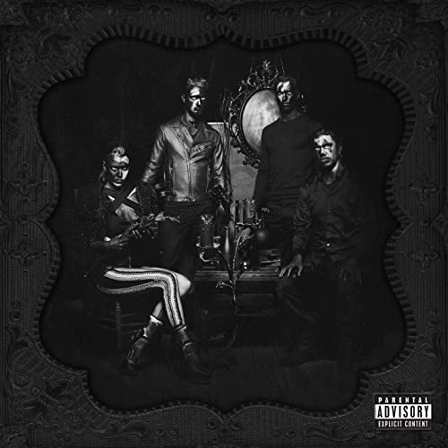 Halestorm - Miss the misery 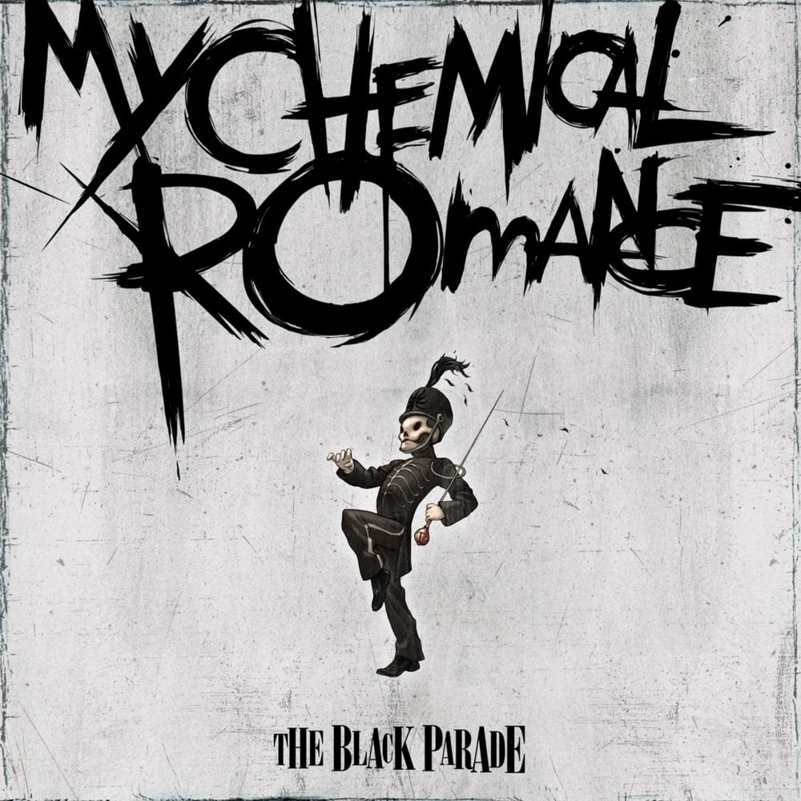 My chemical romance - Teenagers 5- Welk nummer zou je helemaal mee willen kunnen zingen? 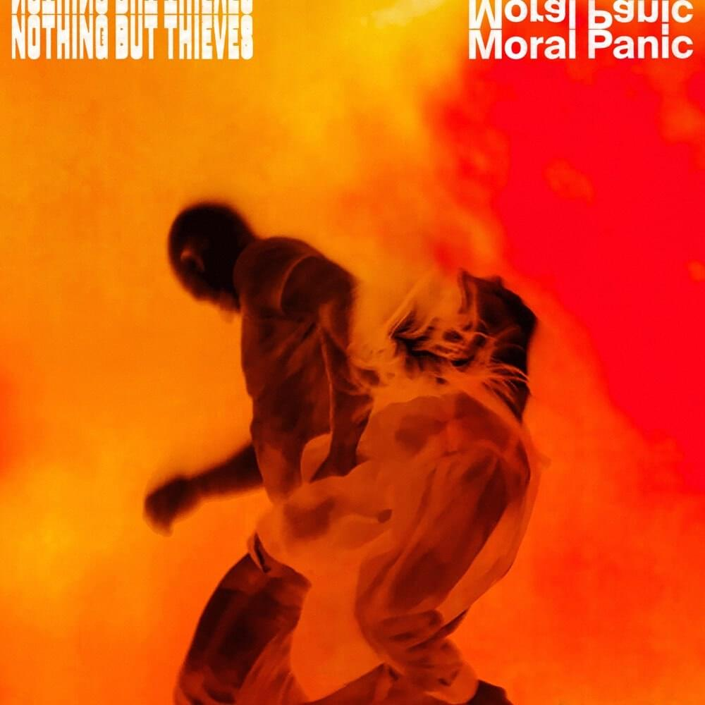 Nothing but thieves - Is everybody crazy 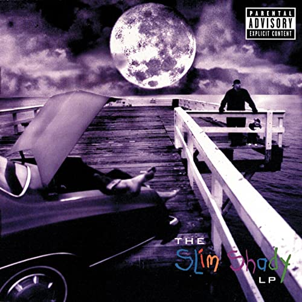 Eminem - The real slim shady 6- Welk nummer zou eerder je guilty pleasure zijn? One direction - Midnight memories 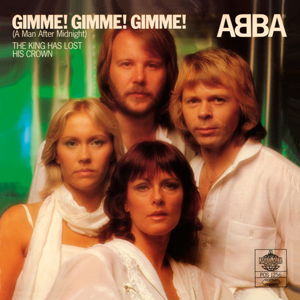 ABBA - Gimme Gimme Gimme Let's find out!
1- Welk nummer zou je luisteren op je beste dag van de week? 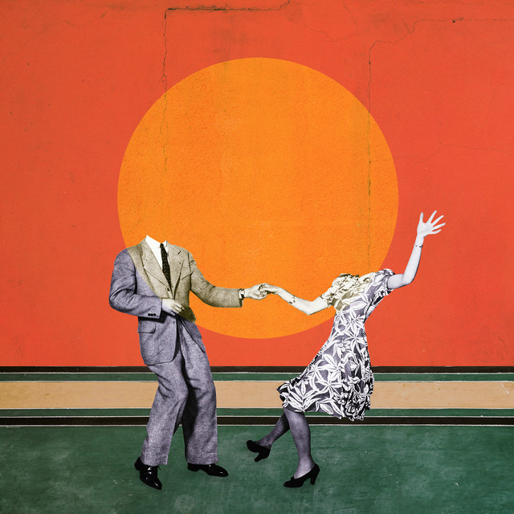 Half.alive - Still fee 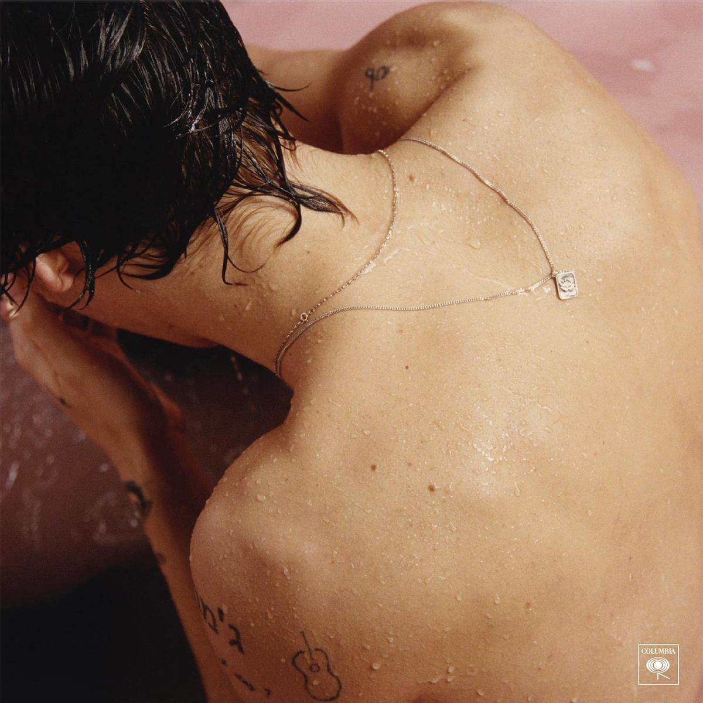 Harry Styles - Kiwi
2- Welk nummer gepresenteerd jou als je boos bent? 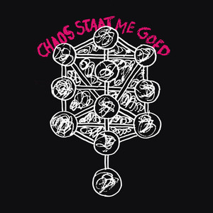 YoungRubbi - Gestrekt been Turnstile - Blackout
3- Welk nummer zet je op als main character die door de stad loopt? 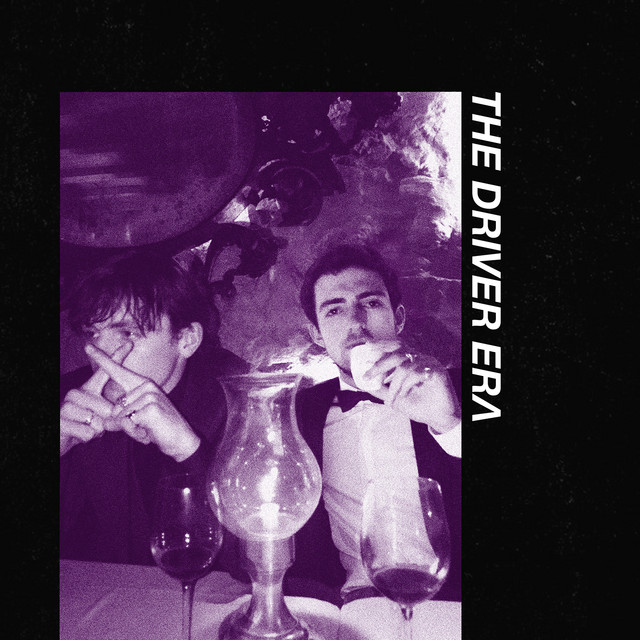 The Driver Era - Preach 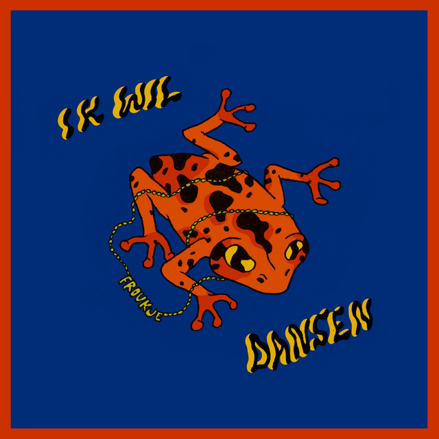 Froukje - Ik wil dansen
4- Welk nummer zet je eerder op als je even echt wilt schreeuwen? 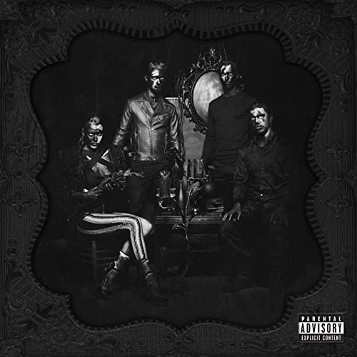 Halestorm - Miss the misery 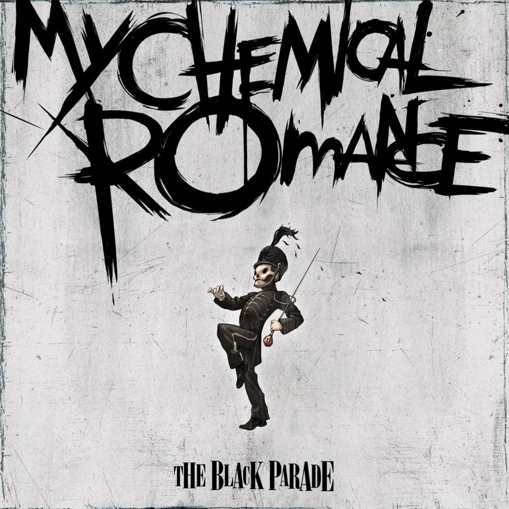 My chemical romance - Teenagers
5- Welk nummer zou je helemaal mee willen kunnen zingen? 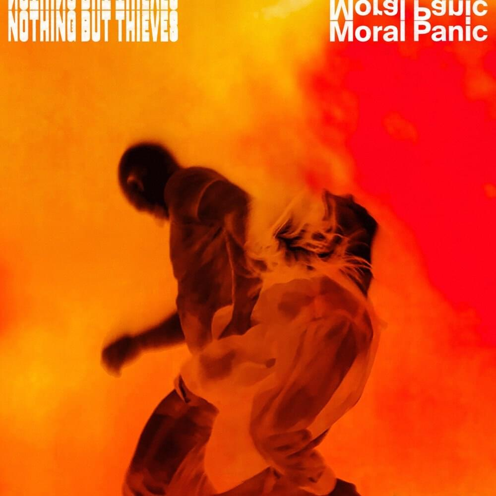 Nothing but thieves - Is everybody crazy 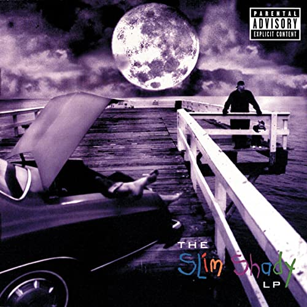 Eminem - The real slim shady
6- Welk nummer zou eerder je guilty pleasure zijn? One direction - Midnight memories 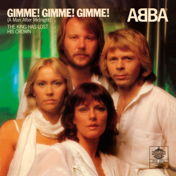 ABBA - Gimme Gimme Gimme